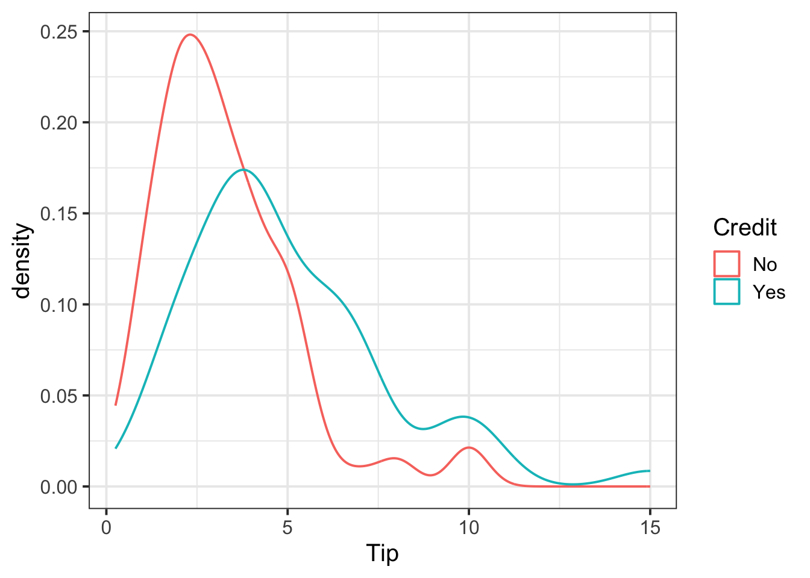
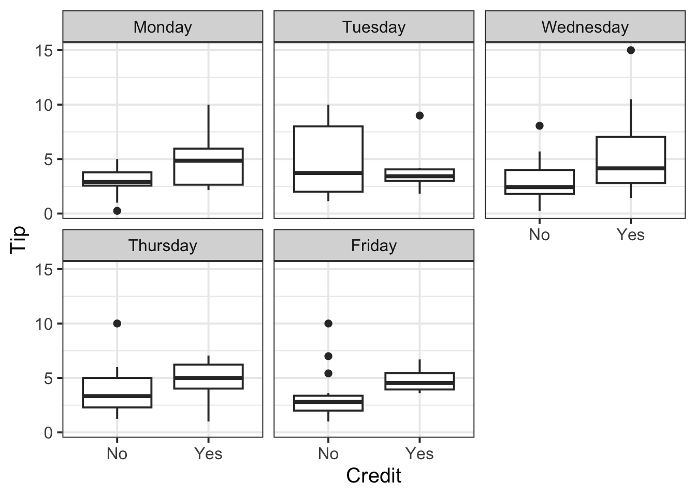

| Variable Name | Description |
|---|---|
| Bill | Size of the bill (in dollars) |
| Tip | Size of the tip (in dollars) |
| Credit | Paid with a credit card? n or y |
| Guests | Number of people in the group |
| Day | Day of the week: m=Monday, t=Tuesday, w=Wednesday, th=Thursday, or f=Friday |
| Server | Code for specific waiter/waitress: A, B, or C |
| PctTip | Tip as a percentage of the bill |
Relationships
Semester 1 - Week 4
1 Formative report A
Instructions and data were released in week 1.
Next week: Submission of Formative report A
Your group must submit one PDF file for formative report A by 12 noon on Friday the 17th of October 2025 (next week). One person must submit on behalf of the entire group and let the group know when they have submitted by leaving a note on the Group Discussion Space.
To submit go to the course Learn page, click “Assessment”, then click “Submit Formative Report A (PDF file only)”.
No extensions. No extensions are possible for this formative report.
Name your submission file: Group NUMBER.LETTER Formative A.pdf
Tip: On the kbl() and kable() functions
The two functions are equivalent.
However, if you provide a list of tables, we recommend using the kable() function as it allows you to also provide a caption without errors when knitting. We have been made aware that this doesn’t work with kbl() unfortunately.
1.1 This week’s task
Task A4
A4) Display and describe a relationship of interest between two or three variables of your choice
Sub-steps
1.2 A4 sub-tasks
Below there are sub-steps you need to consider to complete this week’s task.
Tip
To see the hints, hover your cursor on the superscript numbers.
Reopen last week’s Rmd file, as you will continue last week’s work and build on it.1
Choose two variables (either both numeric, or one categorical and one numeric). Create a plot displaying the relationship between the two variables.2
- Summarise the relationship with descriptive statistic(s), depending on the type of the variables.3
- Choose a third variable of categorical type, and visualise how the relationship above varies across this third variable.4
Summarise with a table of descriptive statistics how the relationship above varies across the third variable.5
-
Organise your report to have three sections:
- Introduction: where you write a concise introduction to the data for a generic reader
- Analysis: where you present your results, tables, and plots
- Discussion: where you write take-home messages about the data and the insights you discovered
Knit the report to PDF, making sure that only text, tables, and plots are visible. Hide the R code chunks so that no R code is visible.
Hiding R code and/or ouput
To not show the code of an R code chunk, and only show the output, write:
```{r, echo=FALSE}
# code goes here
```To show the code of an R code chunk, but hide the output, write:
```{r, results='hide'}
# code goes here
```To hide both code and output of an R code chunk, write:
```{r, include=FALSE}
# code goes here
```2 Worked example
Consider the dataset available at https://uoepsy.github.io/data/RestaurantTips.csv, containing 157 observations on the following 7 variables:
These data were collected by the owner of a bistro in the US, who was interested in understanding the tipping patterns of their customers. The data are adapted from Lock et al. (2020).
# A tibble: 6 × 7
Bill Tip Credit Guests Day Server PctTip
<dbl> <dbl> <chr> <dbl> <chr> <chr> <dbl>
1 23.7 10 n 2 f A 42.2
2 36.1 7 n 3 f B 19.4
3 32.0 5.01 y 2 f A 15.7
4 17.4 3.61 y 2 f B 20.8
5 15.4 3 n 2 f B 19.5
6 18.6 2.5 n 2 f A 13.4We can replace each factor level with a clearer label:
summary(tips) Bill Tip Credit Guests Day
Min. : 1.66 Min. : 0.250 No :106 Min. :1.000 Monday :20
1st Qu.:15.19 1st Qu.: 2.075 Yes: 51 1st Qu.:2.000 Tuesday :13
Median :20.22 Median : 3.340 Median :2.000 Wednesday:62
Mean :22.73 Mean : 3.807 Mean :2.096 Thursday :36
3rd Qu.:28.84 3rd Qu.: 5.000 3rd Qu.:2.000 Friday :26
Max. :70.51 Max. :15.000 Max. :7.000
NA's :1
Server PctTip
A:60 Min. : 6.70
B:65 1st Qu.: 14.30
C:32 Median : 16.20
Mean : 17.89
3rd Qu.: 18.20
Max. :221.00
The percentage of total bill has a maximum value of 221, which seems very strange. Someone is very unlikely to tip more than their bill total. In this case 221% of their bill value seems unlikely.
Let’s inspect the row where PctTip is greater than 100:
tips |>
filter(PctTip > 100)# A tibble: 1 × 7
Bill Tip Credit Guests Day Server PctTip
<dbl> <dbl> <fct> <dbl> <fct> <fct> <dbl>
1 49.6 NA Yes 4 Thursday C 221With a bill of 49.6, the tip would be 109.62 dollars:
49.6 * 221 / 100[1] 109.616Furthermore, we also notice that the tipping amount is not available (NA). The corresponding value in the percentage of total tip seems likely an inputting error, perhaps due to double typing the leading 2 when recording the data. We will set that value to not available (NA) with the following code:
tips$PctTip[tips$PctTip > 100] <- NAConsider, for example, the relationship between bill and tip size. As these are two numerical variables, we visualise the relationship with a scatterplot:
ggplot(tips, aes(x = Bill, y = Tip)) +
geom_point() +
labs(x = "Bill size (in US dollars)",
y = "Tip size (in US dollars)")The code starts by setting up a blank canvas for plotting the dataset tip, and placing on the x axis the variable Bill and on the y axis the variable Tip:
ggplot(tips, aes(x = Bill, y = Tip))The following line adds a geometric shape to the plot, in this case points:
geom_point()The final line uses more informative labels for the reader, setting a label for the x and y axis respectively:
labs(x = "Bill size (in US dollars)",
y = "Tip size (in US dollars)")The layers of the plot need to be added to each other with a + symbol at the end of each line, excluding the last one.
We can numerically summarise this relationship with the covariance between the two variables:
cov(tips$Bill, tips$Tip)[1] NAThere are missing values, so the covariance cannot be computed if one or both of the values \(X, Y\) is missing.
To fix this, we use the option use = "pairwise.complete.obs" to tell R to only keep the complete pairs to compute the covariance, i.e. ignoring pairs where at least one number is NA:
To investigate the relationship between bill and tip size for those who paid by credit card and those who didn’t we can create faceted scatterplots:
ggplot(tips, aes(x = Bill, y = Tip)) +
geom_point() +
labs(x = "Bill size (in US dollars)",
y = "Tip size (in US dollars)") +
facet_wrap(~Credit)Instead of facet_wrap() you can use the facet_grid() function. This allows you to facet the rows by a variable, and the columns by another variable, or both:
-
facet_grid(rows ~ .)
-
facet_grid(. ~ cols)
facet_grid(rows ~ cols)
Try replacing the last line of code with:
facet_grid(Server ~ Credit)
We can improve the labelling by using labeller = "label_both", which displays not only the group value as label, but both the variable and value:
ggplot(tips, aes(x = Bill, y = Tip)) +
geom_point() +
labs(x = "Bill size (in US dollars)",
y = "Tip size (in US dollars)") +
facet_wrap(~Credit, labeller = "label_both")Similarly, you can compute grouped covariances via:
| Credit | Cov |
|---|---|
| No | 15.38 |
| Yes | 37.68 |
Example write-up
Figure 1 highlights a strong positive relationship between bill and tip size (in US dollars). The covariance between the two variables is 25.96 squared dollars. The relationship between bill and tip size is stronger for those who paid by credit card than those who did not, as highlighted by Figure 2 and Table 1, where the covariance between the two variables is 37.68 for those that used a credit card and 15.38 for those that did not.
3 Helpful references on relationships between variables
In the following, Cat = Categorical and Num = Numerical.
Relationships between two variables
Visualise with a mosaic plot:
Summarise with a contingency table:
| A | B | C | |
|---|---|---|---|
| No | 39 | 50 | 17 |
| Yes | 21 | 15 | 15 |
Boxplot
ggplot(tips, aes(x = Credit, y = Tip)) +
geom_boxplot()or grouped histogram
ggplot(tips, aes(x = Tip)) +
geom_histogram(color='white') +
facet_wrap(~Credit)or coloured density plot
ggplot(tips, aes(x = Tip, colour = Credit)) +
geom_density()
Summarise via a grouped table of descriptive statistics:
| Credit | N | M | SD | Med | IQR |
|---|---|---|---|---|---|
| No | 106 | 3.25 | 1.93 | 3.0 | 2.00 |
| Yes | 50 | 4.99 | 2.77 | 4.1 | 3.04 |
Visualise with a scatterplot:
ggplot(tips, aes(x = Bill, y = Tip)) +
geom_point()Summarise with the covariance:
There’s no need to put just one number into a table, write it up in a sentence.
Relationships between three variables
Visalise with a faceted mosaic plot:
ggplot(tips)+
geom_mosaic(aes(x = product(Credit, Server), fill=Credit)) +
facet_wrap(~Day, scales = "free") # scales = "free" shows the x-axis on each plotSummarise with grouped frequency tables:
mon <- tips |>
filter(Day == "Monday") |>
select(Credit, Server) |>
table()
tue <- tips |>
filter(Day == "Tuesday") |>
select(Credit, Server) |>
table()
wed <- tips |>
filter(Day == "Wednesday") |>
select(Credit, Server) |>
table()
thu <- tips |>
filter(Day == "Thursday") |>
select(Credit, Server) |>
table()
fri <- tips |>
filter(Day == "Friday") |>
select(Credit, Server) |>
table()
|
|
|
|
|
Visualise using a faceted boxplot:
ggplot(tips)+
geom_boxplot(aes(x = Credit, y = Tip)) +
facet_wrap(~Day)
or faceted and coloured density plots:
ggplot(tips)+
geom_density(aes(x = Tip, color = Credit)) +
facet_wrap(~Day)Summarise with a table of descriptive statistics grouped by the categorical variables:
| Credit | Day | M | SD |
|---|---|---|---|
| No | Monday | 2.97 | 1.36 |
| No | Tuesday | 4.97 | 3.86 |
| No | Wednesday | 2.92 | 1.64 |
| No | Thursday | 3.75 | 1.92 |
| No | Friday | 3.10 | 2.07 |
| Yes | Monday | 5.02 | 2.95 |
| Yes | Tuesday | 3.90 | 2.23 |
| Yes | Wednesday | 5.43 | 3.51 |
| Yes | Thursday | 4.99 | 1.76 |
| Yes | Friday | 4.84 | 1.37 |
Scatterplot
ggplot(tips, aes(x = Bill, y = Tip)) +
geom_point() +
facet_wrap(~Day)Summarise via a grouped table of descriptive statistics:
| Day | Cov |
|---|---|
| Monday | 23.46 |
| Tuesday | 37.05 |
| Wednesday | 34.76 |
| Thursday | 18.92 |
| Friday | 12.26 |
4 Student Glossary
To conclude the lab, add the new functions to the glossary of R functions.
| Function | Use and package |
|---|---|
geom_histogram |
Creates histograms to show distribution of numeric data (ggplot2) |
geom_density |
Creates smooth density curves to show distribution shape (ggplot2) |
geom_boxplot |
Creates box plots to compare groups and show quartiles/outliers (ggplot2) |
geom_point |
Creates scatter plots to show relationships between two numeric variables (ggplot2) |
geom_mosaic |
Creates mosaic plots to show relationships between categorical variables (ggmosaic) |
facet_wrap |
Splits plots into separate panels based on a categorical variable (ggplot2) |
facet_grid |
Creates grid of plots with rows/columns based on categorical variables (ggplot2) |
group_by |
Groups data by categorical variables for separate calculations (dplyr) |
summarise |
Calculates summary statistics (dplyr) |
cov |
Calculates covariance between two numeric variables (base R) |
round |
Rounds numbers to specified decimal places (base R) |
References
Lock, Robin H, Patti Frazer Lock, Kari Lock Morgan, Eric F Lock, and Dennis F Lock. 2020. Statistics: Unlocking the Power of Data. John Wiley & Sons.
Footnotes
Hint: access the Rmd file from the Group Discussion Space.
If last week’s driver hasn’t uploaded it yet, please ask them to share it with the group via the Group Discussion Space, email, or Teams.
To download the file from the server, go to the RStudio Files pane, tick the box next to the Rmd file, and select More > Export.↩︎-
Hint: Some possibilities are, among many others:
- Categorical-Numeric: faceted
geom_histogram(), colouredgeom_density(), orgeom_boxplot()
- Numeric-Numeric:
geom_point()
- Categorical-Numeric: faceted
-
Hint:
Depending on the type of the variables some of these functions may be useful:
group_by(),n(),mean(),sd(),cov()Stop and think. If the result is NA, what could have caused that?
For some functions, this is solved by adding the argument
na.rm = TRUE.For
cov()you need the argumentuse = "pairwise.complete.obs". This is because the covariance between a pair of variables \(X, Y\) cannot be computed if one or both the values in a product is NA. The argument above tells R to only use pairs with complete observations, i.e. no missing values.
Hint: the function
facet_wrap()may be useful with a categorical variable.↩︎Hint: you may want to use functions such as
group_by,summarise,n,mean,sd,cov↩︎